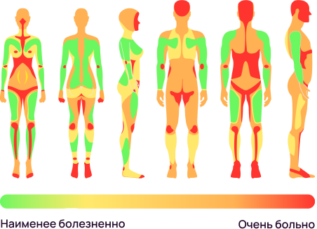

Услуги
Нажми на место, где хотите набить тату, чтобы узнать цену
Эта процедура — не из приятных, и она доставляет определенные сложности вне зависимости от пола и возраста человека. Существует так называемая карта боли, которая иллюстрирует самые болезненные и относительно неприятные области для нанесения рисунка.



Восприимчивость различных участков неодинакова. На болезненность влияют разные факторы: плотность кожи, количество нервных окончаний в определенной области, удаленность от кости (если кость близко к коже, будет больно при нанесении тату).
Важно! Если вам становится нестерпимо больно, не надо дергаться и извиваться под рукой мастера. Лучше всего прервать сеанс и продолжить в следующий раз.
Если знаешь размер и место тату, то смело записывайся
Записаться на сеанс